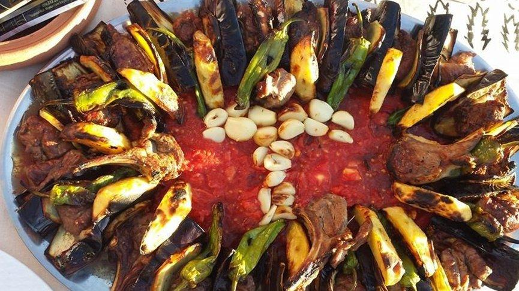
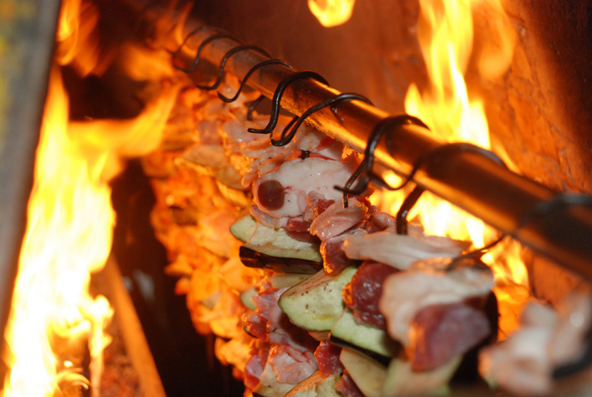

TOKAT KEBABI

Coğrafi İşaret: Tokat Kebabı
Tescil No: 188
Coğrafi İşaretin Türü: Mahreç İşareti
Kullanım Biçimi: Markalama
Ürünün Tanımı ve Ayırt Edici Özellikleri:
Tokat yöresinde yapılan “Tokat Kebabı”, adını yıllardır Tokat ilinde kendine has üretim yöntemiyle yapılmasından dolayı almaktadır. Tokat ve çevresinde ticari bir ürün haline gelmeden önce bağ evlerinde özel günlerde yapılan Tokat Kebabı, malzemelerini oluşturan gıda ürünlerinin kendine has üretim yöntemine göre bir araya getirilip, şekillendirilmesi ve kendine özgü Tokat Kebabı ocağında pişirilmesiyle elde edilen kebap olarak tanımlanabilir.
Tokat Kebabını Tokat’a özgü yapan üretim metodu ve üretime katılan gıda maddelerinin özellikleri olup, kebap bileşimine giren gıda maddelerinin ve son ürünün ayırt edici
özellikleri aşağıdaki gibi sıralanabilir;
1-Tokat kebabında kullanılan etin ve kuyruk yağının doğal ortamda veya yaylalarda yetiştirilen Karayaka koyunlarının 6-9 aylık erkek kuzularından elde ediliyor olması,
2-Tokat kebabında kullanılan sebzelerden biberin Tokat biberi olması,
3-Tokat Kebabının kendine has pişirme tekniği ile diğer kebaplardan ayrılması,
4-Tokat Kebabının kendine has kebap ocağında pişirilmesi
5-Tokat Kebabının sunumunun (servisinin) kendine özgü olması.
Kaynak: http://www.kulturportali.gov.tr/portal/tokatkebabi
TOKAT KEBABI
MALZEME
• 3 Adet Patlıcan
• 20-25 Adet Tokat biberi ( küçük)
• 6-7 adet domates
• 1 Kg. Kuzu eti (Parça kesilmiş)
• 7-8 Baş Sarımsak
• 3-4 adet orta patates
• 100 gr. Kadar kuyruk yağı
• 1 tatlı kaşığı Tuz
• 5 adet Lavaş Pide
İŞLEM BASAMAKLARI :
• Et tuzlanır,
• Patlıcanlar kabuğu soyulmadan uzunlamasına ikiye, sonra bir parmak boyunda kesilir.
• Patatesler soyulup yarım cm lik halkalar şeklinde kesilir.
• şişler bir parça kuyruk yağı ile silinerek yağlanır.(Sebzeler kolay takılsın diye)
• Önce bir parça kuyruk yağı, bir baş sarımsak (Bütün olarak) sonra iri kuşbaşı doğranmış et, 1 parça patlıcan olmak üzere şişlere dizilir.
• Diğer şişlere tepesine yağ, sarımsak, alt kısımlarına biber, patates dizilip hazırlanır.
• Fırın özel yapılmıştır, Ateş iki tarafından yanar, şişler ortasında bulunan uzun demire takılır.
• Şişlerin tepesine takılan kuyruk yağı eriyerek sebzenin üstüne akarak iyi yandan yanan ateşle kızarmasını sağlanır
• Şişlerin alt kısmına konan tavalara dizilen dilimlenmiş domates üstüne akan yağlı et suları ile tatlanır.
• 15-25 dakikada pişen et ve sebzeler bir tepsiye yayılan pideye şekillice konup ortasına domates yayılır.
• Sıcak servis edilir.
